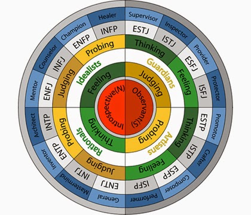
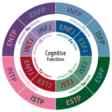
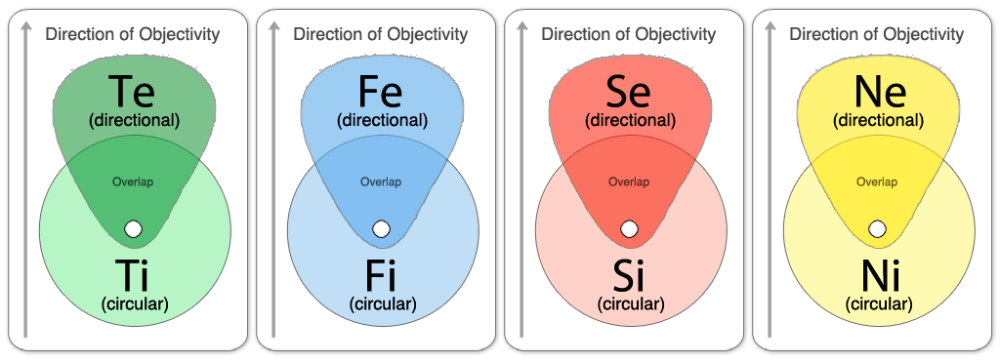

Thấy nhiều bạn khi tiếp cận mbti có nhiều trạng thái như hoang mang, nghi ngờ, không tin tưởng, khó hiểu… nên mình lập topic này để làm rõ hơn về một vài ý (Phần lớn được diễn giải theo cách hiểu của mình nên có gì bạn có thể chỉnh sửa/ bổ sung giúp mình) 1. Tổng quan: MBTI thực chất là gì? MBTI là một công cụ tâm lý dùng để phân loại tính cách dựa trên thuyết 8 cognitive functions của nhà tâm lý học nổi tiếng Carl Jung(Te-Ti, Fe-Fi, Se-Si, Ne-Ni) MBTI thuộc ngành tâm lý học. - Vì sao MBTI chỉ chia ra 16 loại tính cách? – Vì đây là một hình thức phân loại tương đương với các dạng phân loại tính cách khác như Big Five, Enneagram... phục vụ cho nhu cầu khám phá bản thân và xu hướng tâm lý của đa số (kiểu “tôi là ai?”, “tại sao họ không nghĩ/làm/hiểu như tôi?”…). [MBTI không thuộc ngành nghiên cứu khoa học, mặc dù trông nó có vẻ khoa học (hơn nhiều công cụ/phương pháp phân loại khác)] Nên hệ thống phân loại của nó phải được đơn giản hóa, và tính phổ biến cao hơn. Dựa trên khái niệm về các xu hướng chính trong tính cách(gồm E/I, N/S, T/F, J/P) và khái niệm về các chức năng nhận thức(gồm Ne/Ni, Se/Si, Te/Ti, Fe/Fi) với một "khung" như trình bày dưới đây, chúng ta có thể phân ra 16 loại, để thấu hiểu sự đa dạng về tâm lý và tính cách của dân số thế giới - giúp bạn có thể hiểu phần nào bản thân và các cá nhân khác. Hey, theo admin INTJ của chúng ta-dfuz6, thì có thể nói rằng MBTI trả lời cho câu hỏi "Tại sao bạn sống như thế" (khác với enneagram trả lời cho câu "Bạn sống sao") MBTI lấy chức năng chính (dominant function-dom) làm gốc, kết hợp với các functions còn lại theo một cách “có thứ tự” riêng biệt để suy ra 1 type(một loại hình tính cách) Cụ thể thứ tự này là: Với Jx dom(Judging dominant functions-chức năng chính là đánh giá): Jx-Py-Px-Jy – Jy-Px-Py-Jx Với Px dom(Perceiving dominant functions-chức năng chính là nhận thức): Px-Jy-Jx-Py – Py-Jx-Jy-Px (x: extroverted hoặc introverted >< y: introverted hoặc extroverted) Từ mô hình các functions như trên, chúng ta chỉ có thể suy ra 16 types. Tuy nhiên, nếu hiểu theo một cách khác. Vì chưa có ai chứng minh được rằng tâm lý của chúng ta chỉ vận hành theo một cách thức duy nhất. Nếu độc nhất dựa theo thuyết functions. Thì: Liệt kê tất cả các trường hợp của 8 functions. Ta có 8^8 =16777216 loại tính cách!Nếu chỉ dựa theo kiểu phân loại kết hợp mbti + enneagram cũng phân ra rất rất nhiều loại. Tham khảo: MBTI và Enneagram - liên hệ | Diễn đàn MBTI Việt Nam Tương tự với các loại hình tâm lý khác khi kết hợp. Đó là nhìn theo lý thuyết về tâm lý và tính cách con người. Còn ở bản thể thực, tính cách của chúng ta được quy định bởi nhiều yếu tố: yếu tố bên trong như gene, tế bào não, cách thức phối hợp các chức năng của não bộ và cơ thể, cơ chế phản xạ có điều kiện...; yếu tố bên ngoài như môi trường sống, các mối quan hệ, vị trí trong gia đình hay xã hội, trải nghiệm, kinh nghiệm, sự rèn luyện, học tập... -> MBTI chỉ là tương đối trong việc xét tính cách con người. Spoiler Mình đã đoán được người sáng tạo ra MBTI là một Te-Fi user và suy ra là INFP (Isabel Myers-Briggs) do cách mô tả và nhân hóa thành các nhân vật(người chăm sóc, nhà khoa học...) đúng kiểu của tính cách INFP theo lý thuyết. Xem thêm: Lịch sử MBTI và những cống hiến của Isabel Briggs Myers và Mary McCaulley | Diễn đàn MBTI Việt Nam Điều này có nhiều ý nghĩa, một mặt MBTI là đúng, nhưng chỉ trên một khía cạnh. Mặt khác, MBTI thể hiện chủ yếu qua góc nhìn của 1 INFP, cùng với Jung là một INFJ với thuyết cognitive functions kết hợp tạo ra phiên bản hoàn chỉnh của hệ thống phân loại này. Nếu bạn là type khác khi tiếp cận MBTI có thể không thực sự nhìn đúng như cách nhìn người qua lăng kính của INFP và INFJ được^^ Theo thông tin từ một thành viên am hiểu MBTI trong diễn đàn thì Jung tạo ra các function để giải thích sự vô thức. Sau này MBTI vay mượn Jung để type... Qua bài test Spoiler: Bàn luận một số cách hiểu về lý thuyết Chúng ta tạm chia MBTI làm 2 cách hiểu: - Biểu hiện của nhận thức cốt lõi (vô thức) - Biểu hiện của nhận thức được vận hành (tiềm thức > ý thức) (Tạm ghi vậy cho dễ hiểu chứ việc phân chia vô, tiềm, ý thức lại thuộc về một phạm trù khác) a. Cách hiểu thứ nhất: Biểu hiện của nhận thức cốt lõi (vô thức) Theo lý thuyết MBTI thì “tính cách của một người không thể thay đổi”<- đây chính là định nghĩa của cốt lõi tính cách. Vì sao lại không thể thay đổi cốt lõi(core)? Vì core là bẩm sinh, sinh ra đã có, và cố định. Được quy định bởi hệ thống gen + hệ thống thần kinh sơ khai.(sau này qua nhiều quá trình hệ thống này chỉ ngày càng được update thêm chứ không thay đổi cốt lõi). Biểu hiện: tự động thể hiện ra. (và thể hiện thuần nhất(ko phải rõ nhất) trong những năm tháng thơ ấu, khi mà hệ tiềm-ý thức chưa phát triển nhiều do chưa hình thành loạt phản xạ có điều kiện liên quan đến ý thức) Theo MBTI thì core có thể được biểu diễn thành các cognitive functions. Ngoài lề: Tại sao gen + hệ thần kinh lại có thể thể hiện ra thành các functions cố định với tần suất nhiều/ít(mạnh/yếu)? - Theo duy vật: Bởi nó có những kết cấu khác nhau(không ai giống hệt bất cứ ai, kể cả những cặp sinh đôi, tuy có hệ gen giống nhau nhưng bộ gen không thể hiện ra hoàn toàn/tất cả) những kết cấu đó tương tác với nhau và với môi trường ngoài, tạo nên quá trình cung cầu, bảo toàn -> hình ảnh miêu tả về các “functions” trong MBTI mà ta thấy. - Theo duy tâm: Thượng đế thổi hồn vào chúng ta, và đó chính là 16 tính cách :v? - Tâm vật song song: Tính cách bẩm sinh là một dạng từ dimension khác, bắt sóng với thế giới vật chất 3D của chúng ta Theo góc nhìn triết học cơ bản là vậy, dù sao, thế giới vẫn là một thể thống nhất mà con người là một mắt xích trong đó. Và các nhận thức cơ bản cùng tính cách trong MBTI là một hình thức phi vật chất/hình ảnh tổng hòa của việc tự nhận thức/ý thức bản thân và những người khác trong bộ não con người. Vì vậy, nói một cách đơn giản, con người chúng ta, nhờ ý thức được, trong một khoảng nào đó-đã nhận ra các kiểu tính cách và nhận thức cơ bản trong mỗi người, hay từng nhóm người, và MBTI hình thành. Tiếp tục với lý thuyết về core, nếu core thể hiện được đầy đủ thì đã không có nhiều tranh cãi về MBTI. Core, đích thị là “phần chìm của tảng băng”. Phần chìm này không tách biệt mà sẽ gắn liền với phần nổi của tảng băng. Vì vậy ở phần nổi, chúng ta thấy sự giống nhau của một số type. b. Cách hiểu thứ hai: Biểu hiện của nhận thức được vận hành (tiềm thức > ý thức) Một người sử dụng được cả 8 functions. Nhưng chỉ có một vài functions họ “ưa” sử dụng, họ dùng thoải mái, thích hợp với tổng thể con người họ(yếu tố bên trong như đã nói ở trên) & môi trường, hoàn cảnh từ trước đến nay của họ(yếu tố bên ngoài). Họ sử dụng một số functions phù hợp với tần suất lớn, nhiều như một thói quen. “Gieo thói quen-> gặt tính cách” -> Đây chính là tính cách MBTI “phần nổi của tảng băng” mà chúng ta thấy. Tức MBTI thuộc phần ý thức(conscious). Nhờ thế người ta có thể dễ dàng typing/phân loại người khác. Điều này có thể được giải thích rằng do quá trình phản xạ có điều kiện tích hợp hình thành tính cách, lý do vì sao tính cách của 2 người sinh đôi có bộ gen giống hệt nhau lại không giống nhau. Tóm lại, nếu đang phân vân về type, bạn có thể nghĩ rằng: nếu bạn là type này, không có nghĩa là bạn không sử dụng được các functions của một số type khác hay trở thành type khác. Mà chỉ vì: 1, rất khó để thay đổi thói quen, quan điểm, suy nghĩ; 2, không được chọn lựa môi trường phù hợp tuyệt đối với 1 type. 3, không thay đổi được kết cấu cơ thể. ví dụ: nếu bạn sinh ra có các giác quan kém phát triển(trong việc gửi tín hiệu đến não bộ) thì nhiều khả năng bạn sẽ là N-type trong tương lai. Vì vậy, thậm chí mục đích chính của MBTI là để phát triển bản thân thì cũng hơi… fail. Chỉ nên dùng MBTI để thấu hiểu/thông cảm cho bản thân và người khác, và để ứng xử phù hợp. Cũng không nên dùng MBTI để lựa chọn bạn bè, đối tác... (Phần relationship bạn có thể tham khảo Socionics(một mảng khác cũng dựa trên 8 functions của Jung) - nhưng tất nhiên vẫn là dựa trên lý thuyết, điều quan trọng trong tình cảm và các mối quan hệ là cảm nhận của bạn và những nỗ lực ở cả hai phía) KL: Từ core thể hiện ra ngoài là một vấn đề nhỏ. Vô thức là một phần chìm của tâm lý và thường không dễ diễn giải. Trong MBTI vô thức được diễn giải bằng hình thức shadow function - bộ function đối với bộ function chính. VD INTJ sẽ có shadow là ENTP (Ni-Te-Fi-Se -- Ne-Ti-Fe-Si) nhưng ở đây mình diễn giải theo cách khác, nghĩa là vô thức hay ý thức đều là sự thể hiện của 8 function. Như vậy, có thể suy ra một khả năng là: nếu cốt lõi (vô thức) mạnh mẽ, đồng điệu, phù hợp với ý thức, thì tính cách sẽ thể hiện một cách rất rõ ràng. Nếu không, có khả năng xảy ra những trường hợp rất khó xác định tính cách MBTI, Ambivert hay tệ hơn: nếu tâm lý vô thức và ý thức đều có vấn đề, tức là đã mắc các chứng tâm lý, bệnh tâm thần, sẽ có các trường hợp như: đa nhận thức MBTI, rối loạn tính cách… Vì vậy việc xem xét đúng tính cách MBTI thực sự là một khó khăn, nhưng không phải quá khó nếu có thể nắm bắt được cốt lõi. VD: Fi dom core # Fi dom user (Fi dom cốt lõi sẽ thể hiện khác biệt kha khá so với người quen sử dụng Fi làm dominant) Spoiler Btw: Muốn hiểu rõ về bản thân(và người khác) thì nên có cái nhìn đa chiều. Có thể dùng MBTI type + enneagram và môi trường/hoàn cảnh sống + ký ức quá khứ... và xem xét cách họ tương tác trong mỗi môi trường: internet, xã giao, bạn bè, gia đình... Nếu thích, bạn có thể tìm hiểu thêm về astrology hay tử vi là 2 lĩnh vực dựa trên nền tảng tâm lý, triết học và kinh nghiệm từ quan sát + tính toán của người xưa về cách thế giới vận hành, cũng giải thích được nhiều điều lắm đó : p .
2. Hướng đi mới trong việc giải thích rõ hơn về 8 cognitive functions: Mình sẽ phân loại 8 functions theo hướng mới như sau: Functions chiều thời gian - Si sử dụng chiều thời gian quá khứ để dự kiến việc tương lai - Ni sử dụng chiều thời gian tương lai dựa trên cơ sở quá khứ (Lí do nhiều bạn khó phân biệt ISTJ & INTJ, ISFJ và INFJ) Functions chiều không gian - Ne sử dụng thông tin về không gian - Se sử dụng cảm giác về không gian (-> cùng là về không gian nên có thể nhầm lẫn. VD: ESTP và ENTP, INFP v ISFP... -> Dễ nhầm nếu chưa qua tiếp xúc nhiều, mặc dù khác hẳn nhau: Một cái là trực giác, một cái là cảm giác) Functions tương tác trong: - Ti sử dụng hệ thống logic của bản thân để ra quyết định - Fi sử dụng hệ thống giá trị của bản thân để ra quyết định (-> Nhiều khi nhầm lẫn vì khá ẩn. Ti user có thể nhầm với Fi user và ngược lại. VD: ESTP v ESFP, ENFP vs ENTP...) Functions tương tác ngoài: - Te sử dụng hệ thống logic bên ngoài bản thân để ra quyết định - Fe sử dụng hệ thống giá trị bên ngoài bản thân để ra quyết định (Đôi khi nhầm nếu chưa qua tiếp xúc nhiều với 2 type users, thường nhầm ở aux. VD: ISFJ v ISTJ. INTJ v INFJ...) Tổng hợp ta được hình sau: Ta có khối không-thời gian và tương tác trong ngoài khép kín, thông nhau. (Qua quá trình tìm hiểu, mình thấy có 2 trường hợp thường gặp về các cặp functions hay nhầm với nhau như sau: -Te-Fi fake Ti-Fe -Se-Ni fake Ne-Si Spoiler *Dựa theo hình trên + kinh nghiệm nằm vùng diễn đàn khá lâu của mình(+kinh nghiệm lấy từ thực tế) => suy ra được "sự kết nối" giữa các functions như sau: Fi kết nối tốt hơn với Se, Si user Ti kết nối tốt hơn với Ne, Ni user Te, Fe kết nối tốt hơn với Si, Se user ^Sự kết nối này có nghĩa là sự tương tác giữa 2 functions Jx và Px. Để ý chút thì có thể thấy 2 type cùng dom( xét thêm cùng level) nhưng những cặp functions kết nối tốt thì biểu hiện có vẻ "mạnh" hơn. VD: Fi-Se > Fi-Ne ; Te-Si > Te-Ni hoặc "yếu" hơn: VD: Fe-Ni < Fe-Si ;... Từ ^ ta có bảng sau: Bảng chỉ mang tính chất tham khảo, không áp dụng cho các trường hợp đặc biệt Điều này giải thích được vì sao một số types có dom aux (phần đầu) mạnh khó lẫn hơn (Như ESTJ, ESFJ...) và một số types có phần đuôi "trội" (như INTJ, ENFP,...) (dễ nhầm với các types khác)
Cái này có vẻ mình diễn giải hơi thiếu chút nên bạn thấy "từa tựa" nhau. Thực ra thì còn có một "điểm trung gian" giữa 2 chiều được gọi là "hiện tại" - Si dựa theo những gì học được ở quá khứ để áp dụng lên hiện tại(and tương lai) - Ni áp dụng lên cái nhìn về tương lai(tưởng tượng), dựa trên một phần dữ kiện ở hiện tại(and quá khứ) Vì tương lai là điều chưa biết (trong nhận thức hạn chế của chúng ta) nên mới có người nói "Ni users mở hơn Si users rất nhiều" Spoiler ^ Đây cũng là lí do tại sao Si lại kết hợp với Ne: Hành động trong quá khứ là cố định -> tương lai(tưởng tượng) có thể rẽ ra nhiều nhánh Và Ni lại kết hợp với Se: Tương lai(tưởng tượng) cố định -> Hiện tại hành động có thể rẽ ra nhiều hướng ^Đó cũng là lí do vì sao cặp Ne-Si, Se-Ni khi cùng hoạt động đồng thời dễ bị nhầm lẫn với nhau VD thêm theo kiểu triết: Giả sử nếu ta biết trước được tương lai(cố định) Chúng ta sẽ có hai hoặc nhiều nhánh hành động ở hiện tại(rồi sẽ trở thành quá khứ) như sau: - Thuận theo quá trình để đến được điểm biết trước đó - Nghịch theo quá trình để đến được điểm biết trước đó ("cố gắng thay đổi tương lai, nhưng kỳ thực lại làm cho nó diễn ra đúng như thế") - Không thuận, không nghịch, vô hướng (tức mặc kệ, đến đâu thì đến) - Chồng chéo các quá trình... - .... VD: Một người biết trước là tương lai mình sẽ trở thành nghệ sĩ: - Thuận: Sẽ học tập tất cả những gì liên quan đến art để có thể trở thành một nghệ sĩ. - Nghịch: Người này không muốn trở thành nghệ sĩ mà muốn trở thành giám đốc nên học những cái không liên quan. Nhưng sau một lần bị phá sản hoặc biến cố nào đó phải đi ăn xin -> bản năng nghệ sĩ trỗi dậy và dùng tài năng đó để kiếm ăn -> trở thành nghệ sĩ đường phố... - Mặc kệ cho dòng đời xô đẩy -> Được một người giới thiệu vào làng nghệ thuật > trở thành nghệ sĩ -...
3. Phát triển bản thân theo MBTI Cách 1: Phát triển theo 1 types: Phân 16 types cố định trong MBTI giống như phân ra 4 hướng "chính" đông, tây, nam, bắc vậy. Nhưng thực ra còn có rất rất nhiều hướng "phụ" khác: VD: Bắc -> Đông Bắc, Bắc Đông Bắc, Đông Đông Bắc..., Tây Bắc, Tây Tây Bắc, Bắc Tây Bắc.... và vô số hướng "con" khác. Vì vậy, nếu bạn không là type "chuẩn"(hướng "chính"). Bạn chỉ cần thấy giống type nào nhất thì phát triển theo hướng đó. (luyện tập các functions theo thứ tự y như của type đó) hình minh họa Cách 2: Phát triển function mạnh nhất của bạn + phát triển các functions mà bạn thấy "sử dụng được" trong môi trường nào đó, đồng thời hỗ trợ tốt cho function mạnh nhất. Spoiler: Một vài hình tham khảo mô tả về types MBTI & 8 cognitive functions   
4. Di truyền và MBTI Theo như những gì @Atina đã phân tích ở trên và topic sau: [Thảo luận] MBTI được quy định bởi các nhân tố nào | Diễn đàn MBTI Việt Nam thì có thể thấy hệ gen đóng một vai trò vô cùng quan trọng trong việc biểu thị các functions trong MBTI. Theo những gì mình và @Ngón đã thảo luận thì: Đời con sẽ có 2 functions giống bố hoặc mẹ, hoặc cả 2 bố mẹ, và hai functions này thường nằm ở cặp auxiliary-tertiary VD: Ngón có mẹ là ISTP(ba chưa rõ) -> ISTP Ti-Se-Ni-Fe => ENTP Ne-Ti-Fe-Si (type của Ngón + em trai, btw Ngón có Ti mạnh hơn Ne chắc do ảnh hưởng ít nhiều từ mẹ) Vô topic này thì cũng thấy những trường hợp tương tự(bỏ qua những trường hợp type sai) MBTI của thành viên trong gia đình bạn. | Diễn đàn MBTI Việt Nam VD: Gia đình Yukio: Bố ESTP Se-Ti-Fe-Ni => Ne-Ti-Fe-Si ENTP Yukio Mẹ ISTJ Si-Te-Fi-Ne => Ne-Fi-Te-Si ENFP em Yukio Mây Trời: Bố ISTJ Si-Te-Fi-Ne => Fi-Ne-Si-Te INFP Mây Trời Dragonred: Bố ENTJ Te-Ni-Se-Fi Mẹ ESFJ Fe-Si-Ne-Ti => Fi-Ne-Si-Te INFP Dragonred Cá lóc: Bố ESTP Se-Ti-Fe-Ni => Ni-Fe-Ti-Se INFJ Cá Lóc Spoiler Có đợt mình phát hiện ra một điều khá thú vị về phân loại type của gia đình mình & Huyên Linh(theo như những thông tin được chia sẻ) Spoiler: phân tích gđ mình và Huyên Linh(BT) Se chéo dom-inf = Si. Ni chéo dom-inf = Ne; Fi chéo dom-inf = Fe. Te chéo dom-inf = Ti => Rất có khả năng mình cùng type với em của Linh, nhưng cũng không loại trừ trường hợp mình là Px dom do bố mẹ và chị đều là Px dom(ngược với gia đình HL do bố mẹ em Linh đều là Jx dom)(btw thảo nào nghe Linh tâm sự về gđ trên forum cứ thấy giống mình) Spoiler Và khi tìm hiểu họ hàng gia đình mình mình còn phát hiện ra một quy luật kỳ lạ: Ông ngoại: ISTJ x Bà ngoại ISFP => Mẹ mình(con cả): ESFP Anh rể: ISFP x Chị gái ISTJ => Cháu mình: ESFP => Qua các thông tin trên thì chắc chắn sự di truyền tính cách có một cơ chế nào đó,(chưa tìm ra) chứ không phải "cha mẹ sinh con trời sinh tính" như ta vẫn tưởng.
Phần mở bài. Hơi vô chừng nên không có gì để hỏi và phản biện. Những ràng buộc giữa các chức năng không/chưa vững trong một kiến trúc đòi hỏi tính nhất quán qua lại. Hiện phần này chỉ nêu ra quan điểm của người viết về định nghĩa chức năng. Khi đi vào tham chiếu chéo sẽ thấy thiếu khá nhiều ràng buộc cần thiết. Ví dụ: Ne và Se là về không gian. Ni và Si là về thời gian. Ràng buộc của Ni và Ne, hay Si và Se chưa được làm rõ. Điểm gì chung của i khiến Si và Ni (đấy là chưa mở rộng ra Ti và Fi) khiến đám này được gom vào chung một nhóm? ... Mèo lại hoàn mèo? Phải đặt câu hỏi cho tính chính xác của kết luận này, vì nó được xây dựng dựa trên mẫu nghiên cứu không lí tưởng lắm. Tại sao types bố mẹ [của các thành viên] được mặc định là đúng, để rồi từ đó suy ra nhận định trên?
Cái này sao thành quy luật dc(giả sử dữ liệu type bố mẹ và con là đúng đi chăng nữa). Chỉ có 25% khả năng là chắc chắn con cái sẽ có function ở aux-ter là luôn giống với bố/mẹ thôi. 25% là luôn ko giống và 50% có thể hoặc ko(tổng 75%). Coi chừng đọc mấy bài mbti của một số INFJ rồi thần thánh hóa Ni lên đấy. Bọn INxJ chỉ giỏi ở aspect mà Ni phát huy tốt nhất thôi, và tương tự ở các dominant type khác. Khi ko nắm dc logic của vấn đề thì người ta hay nghĩ bản thân/người khác đặc biệt lắm.
@Anita Bạn chỉ mới xét ở khía cạnh bố mẹ => con cái, bạn chưa xét cái đời trên (và đời trên của trên) nên chưa đủ bằng chứng thuyết phục. @Haru Nakano mấy cái số liệu % là từ đâu ra vậy? Btw, mình nghĩ chưa thể kết luận type là có di truyền được đâu.
@liperdo: Nhóm các cặp function cùng loại(aux-ter) thành bộ: Ne-Si, Ni-Se, Te-Fi, Ti-Fe. Vậy là có 4 bộ tạm đặt là P1, P2, J1, J2 đi. Type một người sẽ là: P1J1 || P2J2 || P1J2 || P2J1. Vậy chỉ có một trường hợp duy nhất con cái luôn có cùng function ở aux-ter với bố mẹ là: P1J2 x P2J1. Các trường hợp còn lại suy tương tự.